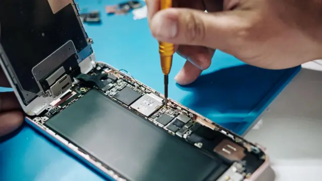

Servicio que ofrecemos
En nuestra empresa de reparación de dispositivos móviles, ofrecemos una amplia gama de servicios para asegurarnos de que tu dispositivo funcione como nuevo. Algunos de nuestros servicios incluyen:
- Reparación de pantallas: Reemplazamos pantallas rotas o dañadas de cualquier modelo de teléfono móvil.
- Reemplazo de baterías: Sustituimos baterías agotadas para mejorar la duración y el rendimiento de tu dispositivo.
- Reparación de puertos de carga: Arreglamos o reemplazamos puertos de carga defectuosos para garantizar que tu dispositivo se cargue correctamente.
- Solución de problemas de software: Diagnosticamos y solucionamos problemas de software, incluyendo actualizaciones, restauraciones y eliminación de virus.
- Reparación de cámaras: Reparamos o reemplazamos cámaras frontales y traseras que no funcionan correctamente.
- Recuperación de datos: Ayudamos a recuperar datos importantes de dispositivos dañados o con fallos.
Nos enorgullece ofrecer un servicio rápido y eficiente, utilizando repuestos de alta calidad y garantizando la satisfacción del cliente. ¡Confía en nosotros para mantener tu dispositivo en perfectas condiciones!
